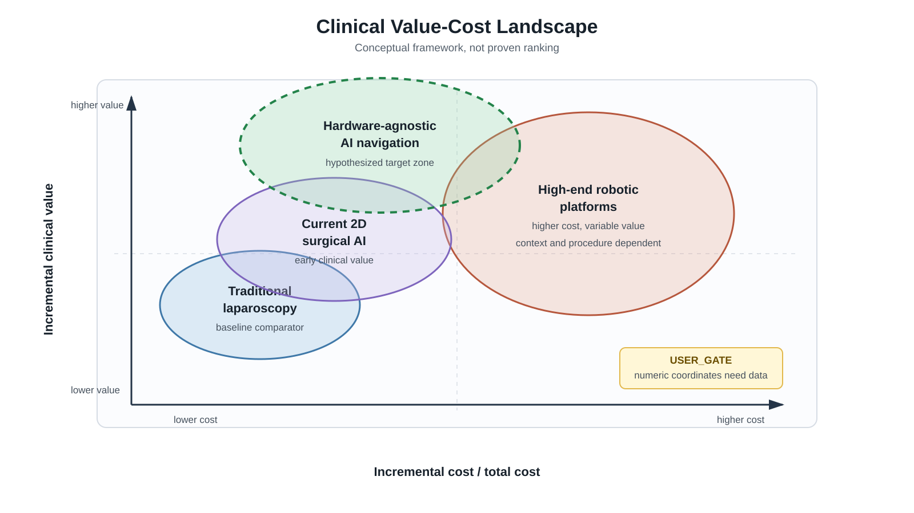
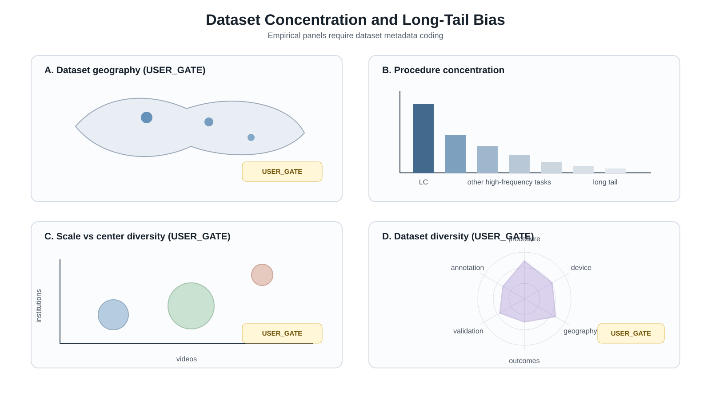
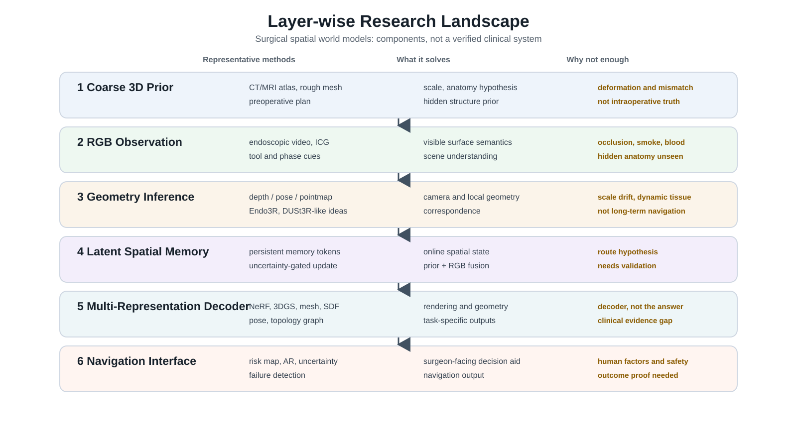
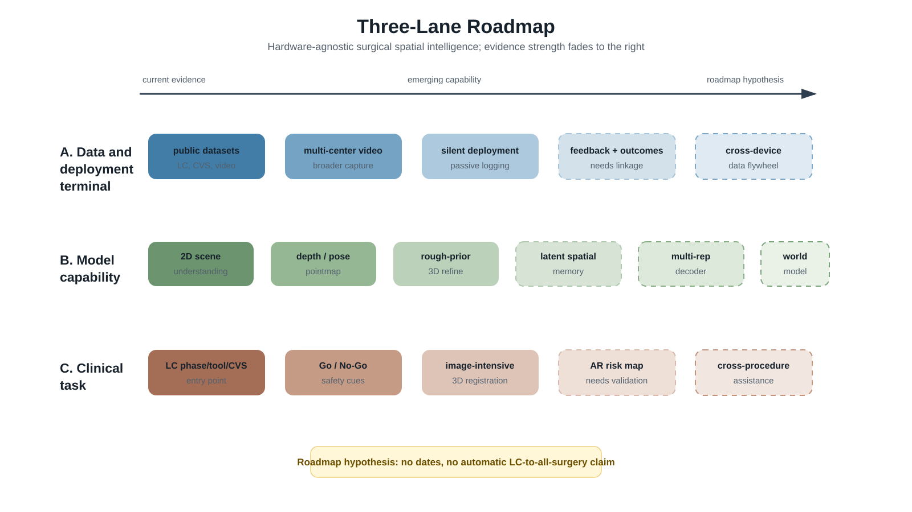

surgical-ai-review figure drafts
Figure 1: Clinical Value-Cost Landscape

Figure 2: Dataset Concentration and Long-Tail Bias

Figure 3: Layer-wise Research Landscape

Figure 4: Three-Lane Roadmap




